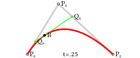
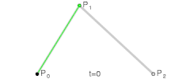
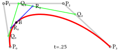
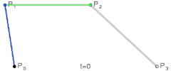

SVG path
1. Path概述
<path>元素是所有SVG基本形状中最强大的元素，它可以创建线条、曲线、弧线，甚至能用来画图。<path>元素由属性以及属性的参数组组成。而其中定义了形状的属性为d，属性d的值是一个“命令+参数”的序列,并且因为采用的使用户坐标系统，所以毋须指定单位，例如：
<path d=”M0,0L10,20C30-10,40,20,100,100” fill=”none” stroke=”red” />
1.1 命令及其含义
| 命令 | 含义 |
|---|---|
| M/m (x,y)+ | 移动当前位置 |
| L/l (x,y)+ | 从当前位置绘制线段到指定位置 |
| H/h (x)+ | 从当前位置绘制水平线到达指定的x坐标 |
| V/v (x)+ | 从当前位置绘制竖直线到达指定的y坐标 |
| Z/z | 闭合当前路径 |
| C/c (x1,y1,x2,y2,x,y)+ | 从当前位置绘制三次贝塞尔曲线到指定位置 |
| S/s (x2,y2,x,y)+ | 从当前位置光滑绘制三次贝塞尔曲线到指定位置 |
| Q/q (x1,y1,x,y)+ | 从当前位置绘制二次贝塞尔曲线到指定位置 |
| T/t (x,y)+ | 从当前位置光滑绘制二次贝塞尔曲线到指定位置 |
| A/a (rx,ry,xr,laf,sf,x,y) | 从当前位置绘制弧线到指定位置 |
1.2 命令的基本规律
- 区分大小写：大写表示坐标参数为绝对位置，小写则为相对位置。绝对位置表示的是以当前<path>的自身坐标系为参考，直接移动到值对应的点。而相对位置则是以画笔所在的当前位置为标准，进行对应值的移动。简单举例，对于参数（10，20）,如果使用该值的命令为大写，则以<path>自身坐标系的左上角原点（0，0）为准，分别向下和向左移动10、20个单位，相反，如果使用该值的命令值为小写，则以当前画笔所在位置为原点分别向下和向左移动10、20个单位，假如当前画笔所在位置为（50，50），则移动后相对自身坐标值为（60， 70）。两种命令各有优势，如果使用大写命令，则方便掌控各转折点的位置，缺点便是线的长度不直观，需要更复杂计算。而使用小写命令则相反。
- 最后的参数表示最终画笔要到达的位置。
- 上一个命令结束的位置就是下一个命令开始的位置。
- 命令可以重复参数表示重复执行同一条命令。
- 命令与命令之间用空格、
,隔开或者不间隔。
2. 移动和直线命令
本章主要描述M/m、L/l、H/h、V/v四种命令，这四个命令都较为简单。为了更好地展示路径，本章的所有例子里，在用path绘制路径的同时，也会用circle标注路径上的点，表示画笔停留的位置，或者将M移动的路径虚拟出来，实际上M/m命令只有一个参数时不会进行画线。本节所有出现的坐标皆以自身坐标系为准。为了方便，<path>元素除了d属性，其他属性均未列出。
2.1 M/m
移动当前画笔位置。使用方法Mx,y 。x表示X轴坐标值，y表示Y轴坐标值一个x,y。
在<path>元素开始绘制前，当前位置是不确定的。必须通过M命令就设置当前位置（起始位置）。例如以下命令，表示把画笔移动至点（100，100）处。
<path d=”M100,100” />
然后来测试一下小写m命令。
<path d=”M100,100 m50, 0” />
可以看见，画笔从当前位置（100，100）的位置往左移动了50单位，如果换成大写M命令：
<path d=”M100,100 M50, 0” />
画笔从（100，100）位置移动到了（50，0）位置，也就是说该命令M50,0以自身坐标系原点（0，0）为准进行了移动。
最后，测试一下M的重复参数。
<path d=”M100,100 , 100, 150” />
M命令只有一个参数时，单纯地表示把画笔移动到参数表示的位置，但是当有多个参数时，第一个参数后的参数都会将其当成L/l命令处理，把参数用线段连接起来并移动当前位置。上面的例子就是首先从把画笔置于点（100，100），然后从当前位置画一条终点位置为（100，150）的蓝色线。
同理，m命令也是一样的，只不过点的位置变成了相对位置。
2.2 L/l
L/l命令表示从当前位置绘制线段到指定位置，并把该指定位置设置为当前画笔位置。
<path d=”M0, 0, L100,100 “ />
上述命令描述了一条起始点为（0，0）终点为（100，100）的蓝色线段，并且把当前画笔位置设置为（100，100）。然后测试一下小写l命令：
<path d=”M0, 0, L100,100 l50,0” />
可以看见，画笔从点（100, 100）往右移动了50个单位，并且把画笔置于该位置，而该点的绝对位置为（150，100）。等同于命令M0, 0, L100,100 L150,100：
path d=”M0, 0, L100,100 L150,100” />
实际上也等同于M0, 0, L100,100,150,100，此命令为重复命令。
<path d=”M0, 0, L100,100 150,100” />
L的重复命令，其实就是执行多个L命令。实际上结果与上述二例都是一样的。
2.3 H/h
H/h表示绘制水平线到指定的x位置。简单看例：
<path d=”M100, 100 H150” />
上述<path>描述了一条从（100，100）到（150，100）的水平线。故名思意，水平线的y值会与画笔开始位置的位置的y值保持一致。此命令可以看作水平L/l的简化版。然后看一下小写命令：
<path d=”M100, 100 h150” />
小写命令则表示以画布当前位置为相对位置，画一条长150个单位的线段。简单计算后，终点的绝对位置为（250，100）。重复命令：<path d=”M100, 100 h150，50” />
毫无意外，重复命令也只是简单执行了多个h命令而已。
2.4 V/v
V/v命令绘制竖直线到指定的y位置，意义与Y/y命令差不多，只是从水平线变为垂直线，因此不再赘述。
3. 弧线命令
3.1 A/a(rx,ry,xr,laf,sf,x,y)+
弧线命令A/a(rx,ry,xr,laf,sf,x,y)是<path>元素中最复杂的命令，一共拥有七个参数。绘制得出的弧线可以视为圆形或椭圆形的一部分。参数如下：
- rx - (radius-x)弧线所在椭圆的x半轴长
- ry - (radius-y)弧线所在椭圆的y半轴长
- xr - (xAxis-rotation)弧线所在椭圆的长轴角度
- laf - (large-arc-flag)是否选择弧长较长的那一段弧
- sf - (sweep-flag)决定弧线的方向
- x, y - 弧的终点位置
数学上来看，两点和长轴半径以及短轴半径可以确定一个椭圆（不包含位置、旋转角度等），但是在这里，因为是绘制图形，所以椭圆的角度、位置等不同也意味着它们是不同的椭圆，所以单凭两点和长轴、短轴半径是无法确定一个椭圆的，所以需要如此多的参数来确定。下面举例逐个分析A命令中各参数的作用
下方例子描述了一段由AB线段、起始点为B的BC弧线（绿色区域）、CD线段组件的路径，本节后面的变换都以此图为基础进行变换。本例中红色区域实际上是不存在的，为了直观，特地将其拟化使得线对应完整的椭圆更明显。
<path d=”M10,100 L200,100 A60,40,0,1,1,300,100 L500,100” />
本例中弧线的rx为60，ry为40。rx表示弧线在自身x轴方向上的半径值， ry表示弧线在自身y轴方向上的半径值，需要注意的是，弧线拥有自身坐标系（第二章《SVG的坐标系统》第三节）,rx、ry是相对于自身坐标系进行确定的。也就是说弧线旋转时，x、y轴也跟着旋转，rx、ry的值和意义都不会改变。尝试改变rx、ry，使其变成一个正圆的弧线。
<path d=”M10,100 L200,100 A50,50,0,1,1,300,100 L500,100” />
可以看见，弧线变成了正圆的一部分。
然后尝试改变参数xr，值置为45。
<path d=”M10,100 L200,100 A60,40,45,1,1,300,100 L500,100” />
可以看见，椭圆整体做了一个正方向的45°旋转（SVG中坐标系旋转的正方向为顺时针方向）。所以，xr确定了椭圆长轴在<path>坐标系中对于x轴的角度。
接着测试laf参数，此参数决定是否选择弧长较长的那一段弧 ，改变例子中的laf参数，置为0：
<path d=”M10,100 L200,100 A60,40,0,0,1,300,100 L500,100” />
可以看见，当laf变为0是，实际得出的弧线变成了较短端。所以，laf=1是表示取较长端弧线，为laf=0时相反。
再是sf参数，此参数决定弧线的绘制方向。改变此参数为0：
<path d=”M10,100 L200,100 A60,40,0,1,0,300,100 L500,100” />
所以，当sf=1时，表示顺时针方向绘制弧线，而当sf=0时，表示逆时针方向绘制弧线。
最后测试x, y，x、y决定了弧线结束的位置。设置x=400，y=100:
<path d=”M10,100 L200,100 A60,40,0,1,1,400,100 L500,100” />
可以看见，原本的线结束位置从C点变成了C'。并且值得注意的是，弧线起点B和结束点C'之间的距离（400-200）已经大于命令中设置的弧线的长轴直径（60*20），所以rx、ry不再生效，默认为绘制后弧线实际的长轴直径和短轴直径。并且在这种情况况下进行旋转，椭圆的大小会随着角度的变化而变化。原因旋转后的弧线，若长轴不变时，无法同时穿过BC'点。
3.2 小结
用<path>元素绘制弧线比较难掌握的，除了有较强的数学知识，还需要一定的空间想象能力。但是，能通过练习能掌握的都不是问题。
4. 贝塞尔曲线命令
在<path>中，与贝塞尔曲线相关的命令有四个，分别是是C/c、S/s、Q/q、T/t。此类型的命令使用方法虽然不复杂，但是其原理却是所有命令中最难理解的。在数学的数值分析领域中，贝塞尔曲线（英语：Bézier curve，亦作“贝塞尔”）是计算机图形学中相当重要的参数曲线。更高维度的广泛化贝塞尔曲线就称作贝兹曲面，其中贝兹三角是一种特殊的实例。贝塞尔曲线于1962年，由法国工程师皮埃尔·贝兹（Pierre Bézier）所广泛发表，他运用贝塞尔曲线来为汽车的主体进行设计。贝塞尔曲线最初由保尔·德·卡斯特里奥于1959年运用德卡斯特里奥算法开发，以稳定数值的方法求出贝塞尔曲线。维基百科或者看看知乎，分享你刚编的故事。说实话，看了这么多，我的理解仍然只停留在“这是一条公式生成的平滑曲线”这种阶段…所以说，一名优秀的可视化工程师多半还是个数学家。笔者还是来直接上手命令，用图形说话，片面理解理解。
4.1 线性贝塞尔曲线
线性贝塞尔曲线也称为一次贝塞尔曲线，如下图（t的区间为[0, 1]），线性贝塞尔曲线函数中的t会经过由P0至P1的B(t)所描述的曲线。例如当t=0.25时，B(t)即一条由点P0至P1路径的四分之一处。就像由0至1的连续t，B(t)描述一条由P0至P1的直线。所以说，线性贝塞尔曲线就是一条直线。

4.2 二次贝塞尔曲线
为建构二次贝塞尔曲线，可以把中介点Q0和Q1作为由0至1的t：
- 由P0至P1的连续点Q0，描述一条线性贝塞尔曲线。
- 由P1至P2的连续点Q1，描述一条线性贝塞尔曲线。
- 由Q0至Q1的连续点B（t），描述一条二次贝塞尔曲线。


可以说，二次贝塞尔曲线由两条线性贝塞尔曲线共同作用而成。而在<path>元素中创建二次贝塞尔曲线的命令是Q/q (x1,y1,x,y)+，观察实例：
<path d=”M10,100 L200,100 Q200,50,300,100 L500,100” />
此例子描述了一段由AB直线段、BC曲线段、CD直线段组成的路径。曲中BC就是上述的二次贝塞尔曲线，该曲线的起点为B(200, 100)，结束点为C(400, 100)，并且存在一点Q(200, 50)。所以点C对应的命令Q/q中参数（x, y），也就是说x/y决定了贝塞尔曲线的终点。而点Q是曲线的控制点，控制点描述的是曲线起始点的斜率，曲线上各个点的斜率，是从起点斜率到终点斜率的渐变过程，请结合GIF图意会。通过改变控制点位置来改变曲线的曲率，取得想要的曲线形状。如下
<path d=”M10,100 L200,100 Q240,20,300,100 L500,100” />
而T/t (x,y)+命令，可以创建一个与前面一样的曲线，不过T/t前面必须是Q/q、T/t二次贝塞尔曲线命令。它的作用是，从前面的二次贝塞尔曲线的终点为起点，以前者曲线的控制点中心对称后的点作为控制点（以保持曲率不变），描绘一条终点为（x，y）的二次贝塞尔曲线，如果命令重复输入参数，则描绘按顺序描绘多条曲线，并且第二个参数会以第一个参数描绘的曲线为准，进行镜像绘制，就如同执行两次T命令。
<path d=”M10,100 L200,100 Q200,50,300,100 T400,100, 500, 100 L600,100” />
<path d=”M10,100 L200,100 Q200,50,300,100 T400,100 T500, 100 L600,100” />
4.3 三次贝塞尔曲线
建构高阶曲线，便需要相应更多的中介点。对于三次曲线，可由线性贝塞尔曲线描述的中介点Q0、Q1、Q2，和由二次曲线描述的点R0、R1所建构：


在<path>命令中的使用方式与二次贝塞尔曲线是相似的，只不过控制点变成了2个。
<path d=”M10,100 L200,100 C240,20, 260,190,300,100 L500,100” />
简而言之，上述三次曲线中终点为C(400, 100)，控制点分别为Q1(240, 20)、Q2(260, 190)。以上就是三次贝塞尔曲线的粗略原理和在SVG中的应用方式。
而S/s (x2,y2,x,y)+命令与二次贝塞尔曲线的T/t命令是类似的，如果他前一个命令是C/c或S/s命令，则它的第一个控制点会被假设成前一个命令曲线的第二个控制点的中心对称点，而参数中（x2， y2）作为第二个控制点、（x，y）作为结束点，如下，点S1是点Q2控制点关于点C的中心对称点。如果S命令单独使用，前面没有C或S命令，那画笔当前位置点将作为第一个控制点（将与起始点）重合。
4.4 小结
path命令相当自由灵活，可以描绘任意的段。但尽管如此，如果不是创建动态的svg元素，还是建议使用svg编辑器来绘制复杂的path元素。